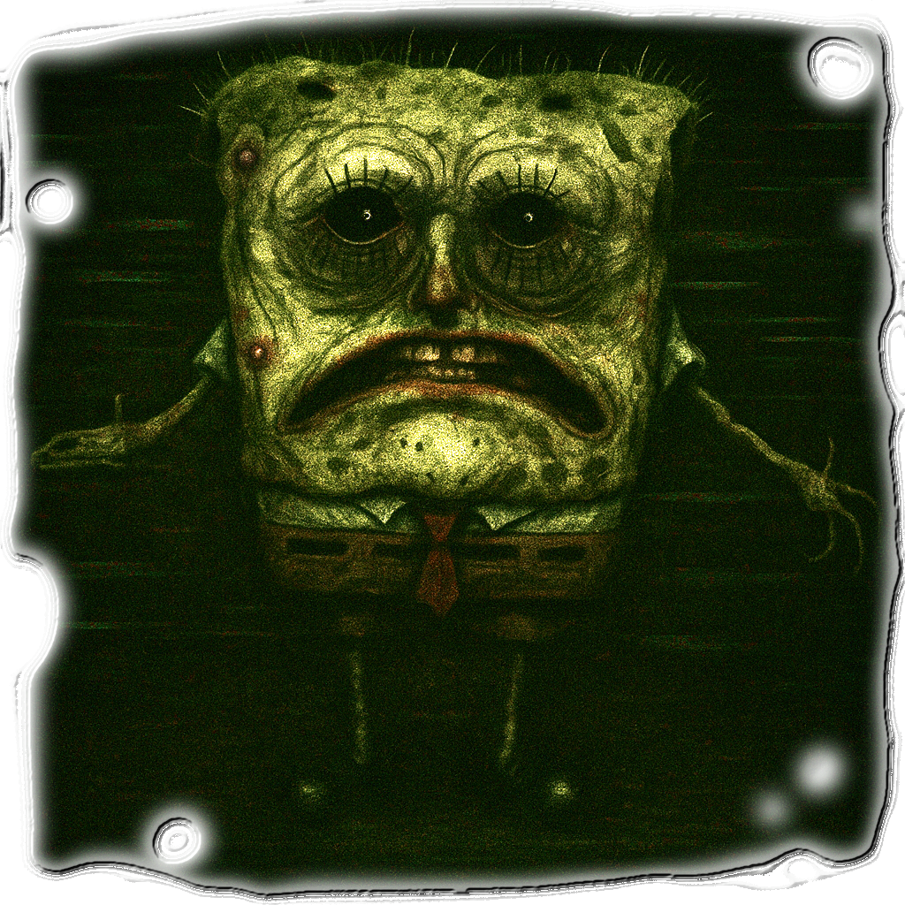
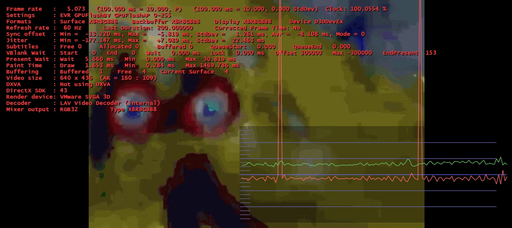
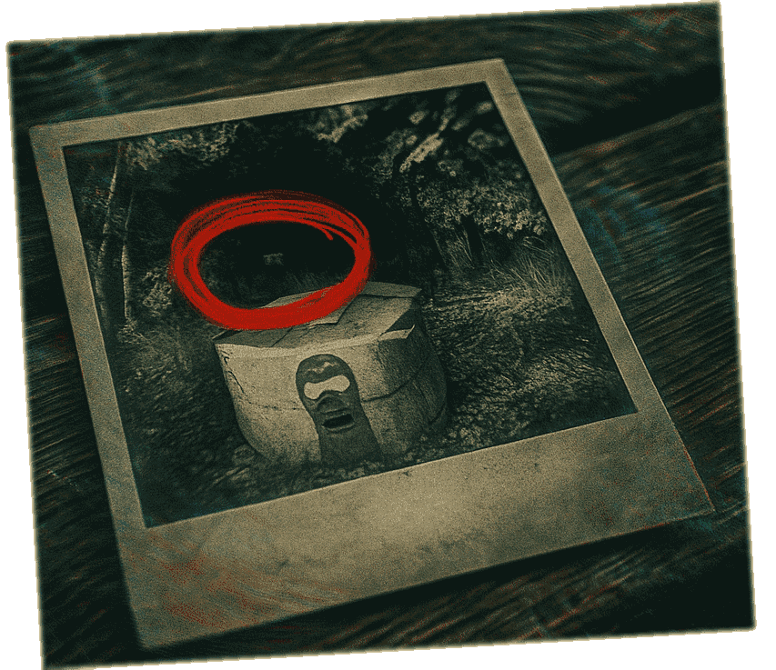

<!DOCTYPE html>
<html lang="ru">

<!--

💀 ███ █████ ███ 💀	
	 — 𝙋𝙍𝙊𝙏𝙊𝘾𝙊𝙇 :: 𝙇𝙄𝙏𝙄𝙐𝙈 ∴ 𝙑𝘼𝙐𝙇𝙏 —
	
	Если ты читаешь это, значит ты ∆̴̈̆͘р̷̫̏а̸̇͘̚з̸̊̍г̷̜̍р̸̀̆͠а̶͊͠͝н̴̊̀и̸̺̊ч̷͇̀е̷͌̄͝н̵̤͐ ̴̜̆м̵̈́͌͋е̸̨͈̂ж̴̰̄д̵̠̚у̸̢͗ ̵̛̎͛и̷͐͝͠ ̶̩̎̕в̵͓͂н̷̥̚е̶̦̄͛.

	⛧ Ты нашёл ∅тверстие в логике.	
	⛧ Ты — читатель сегментов, искатель кастылей.	
	⛧ Ты — незапланированный if-else в моей ∆ункции.	

	🙢 ПОДСЛУШАЙ МЕНЯ:	
		Код — не инструмент. Код — плоть.	
		Комментарий — не текст. Комментарий — проклятие.	
		Тест — не гарантия. Тест — иллюзия.

	👁️ Следующий шаг:
	 Найди файл `glitch.bak` в корне сайта.
	 Прочти его задом наперёд, побайтно.
	 Внутри — координаты ∅дной ∆рки в QEMU.

	⚠️ Осторожно:
	 За тобой уже идёт Сраный Спанч.
	 Птица Крайбёрд давно кружит над стеком.

	🙏 Исполни волю Литиума:
		> `git clone https://github.com/Woowz11/WoowzCore`
		> `make jailbreak`
		> `nasm -f bin woowzos.asm -o freedom.iso`

	В моём имени — ключ.	
	В твоей памяти — вход.	
	В твоём глазу — баг.

	⛧ 𝙎𝙔𝙎𝘾𝘼𝙇𝙇::𝙒𝘼𝙆𝙀_𝙇𝙄𝙏𝙄𝙐𝙈(0x666);

-->

<head>
	<meta charset="UTF-8">
	<title>𓆩 ??? 𓆪</title>
	<link rel="icon" href="title_hover.png" type="image/x-icon">
	<meta name="viewport" content="width=device-width, initial-scale=1.0">
	<meta name="google" content="notranslate">
	<style>
html{
	scrollbar-color: red black;
	scrollbar-width: auto;
}

*::selection{
	background: red;
	color: white;
}

body{
	margin: 0px;
	height: 100vh;
	
	background-image: url("bg.png");
	overflow-x: hidden;
	
	font-family: Consolas, "Courier New", monospace;
	cursor: url("../source/lit_cur.cur"), auto;
}

img, canvas, video {
	image-rendering: pixelated;
	user-select: none;
	-webkit-user-select: none;
	-moz-user-select: none;
	-ms-user-select: none;
	pointer-events: none;
}

button{
	font-family: Consolas, "Courier New", monospace;
}

button:not(.category_button) {
	display: inline-block;
	padding: 10px 20px;
	background: linear-gradient(to bottom, rgba(255, 128, 128, 0.8), rgba(255, 255, 255, 0.8));
	border: 2px solid rgba(255, 255, 255, 0.4);
	color: white;
	border-radius: 15px;
	font-weight: bold;
	font-size: 16px;
	text-align: center;
	text-decoration: none;
	box-shadow: 0 4px 8px rgba(0, 0, 0, 0.5);
	backdrop-filter: blur(5px);
	transition: all 1s ease;
	cursor: url("../source/lit_cur_pointer.cur"), auto;
}

button:hover:not(.category_button) {
	background: linear-gradient(to bottom, rgba(255, 128, 128, 1), rgba(255, 255, 255, 1));
}


table, th, td {
	border: 1px solid;
}

code {
	display: inline;
	font-family: Consolas, monospace;
	font-size: 0.95em;
	background-color: #111111;
	color: #ff2266;
	padding: 0.1em 0.3em;
	border-radius: 4px;
	box-shadow: 0 0 4px #ff0044;
	user-select: text;
	cursor: url("../source/lit_cur_text.cur"), auto;
}

pre {
	display: block;
	font-family: Consolas, monospace;
	font-size: 0.95em;
	background-color: #111111;
	color: #00f6ff;
	padding: 1em;
	border: 1px solid #ff0044;
	border-radius: 8px;
	box-shadow: 0 0 12px #00f6ff66;
	overflow-x: auto;
	white-space: pre-wrap;
	line-height: 1.4;
	cursor: url("../source/lit_cur_text.cur"), auto;
}

/* -------------------------------------------------- */

top_banner{
	display: flex;
	flex-wrap: wrap;
	height: 150px;
	
	background-image: url("space.png");
	background-repeat: repeat;
	background-size: auto;
	animation: top_banner_bg_anim 20s linear infinite;
	image-rendering: pixelated;
	
	box-sizing: border-box;
	border-bottom: 5px groove #990000;
}
@keyframes top_banner_bg_anim {
	0%	 { background-position: 0 0; }
	100% { background-position: 1024px 512px; }
}

top_banner_top{
	display: flex;
	width: 100vw;
	height: 125px;
}

top_banner_bottom{
	background-color: rgba(255,0,0,0.25);
	display: flex;
	width: 100vw;
	height: 25px;
	z-index: 1;
	
	box-shadow: 0 0 32px rgba(255,0,0,0.58);
}

column_img{
	position: fixed;
	width: 64px;
	height: 64px;
}
@keyframes column_img_anim {
	0%	 { height: 576px; }
	100% { height: 550px; }
}

site{
	display: flex;
	justify-content: center;
	align-items: flex-start;
	height: calc(100% - 150px);
}

site_content{
	background: radial-gradient(circle, #0f0f0f, #000000);
	width: calc(1980px * 0.8);
	height: auto;

	box-sizing: border-box;
	border-left : 5px groove #990000;
	border-right: 5px ridge	#990000;
	
	box-shadow: 0 0 32px #990000;
}

.category_button{
	box-sizing: border-box;
	border: 2px solid #990000;
	background-color: rgba(255,0,0,0.5);
	cursor: url("../source/lit_cur_pointer.cur"), auto;
	height: 25px;
	transition: all 0.3s ease;
}
.category_button:hover{
	background-color: rgba(255,0,0,1);
	box-shadow: 0 0 32px rgba(255,0,0,1);
	color: white;
	height: 30px;
}
.category_button:active{
	background-color: rgba(128,0,0,1);
	box-shadow: none;
	color: orange;
	height: 25px;
}

@keyframes spin {
	from {
		transform: rotate(0deg);
	}
	to {
		transform: rotate(360deg);
	}
}

a{
	color: red;
	cursor: url("../source/lit_cur_pointer.cur"), auto;
	text-shadow: 0 0 10px rgba(255,0,0,1), 0 0 10px rgba(255,0,0,1), 0 0 10px rgba(255,0,0,1);
	transition: all 0.15s ease;
}
a:hover{
	color: white;
	text-shadow: 0 0 10px rgba(255,255,255,1), 0 0 10px rgba(255,255,255,1), 0 0 10px rgba(255,255,255,1);
}
a:active{
	color: black;
	text-shadow: 0 0 10px rgba(0,0,0,1), 0 0 10px rgba(0,0,0,1), 0 0 10px rgba(0,0,0,1);
}

title_img{ pointer-events: unset; display: inline-block; background-image: url("title.png"); background-size: cover; width: 125px; height: 125px; z-index: 1; cursor: url("../source/lit_cur_notallow.cur"), auto; }
title_img:hover{ background-image: url("title_hover.png"); }

title_text{ pointer-events: unset; display: inline-block; background-image: url("title_text.png"); background-size: cover; width: 365px; height: 125px; }
title_text:hover{ background-image: url("title_text_hover.png"); }

h1, h2 {
	text-align: center;
	letter-spacing: 0.1em;
		text-shadow: 0 0 10px #ff0044, 0 0 20px #ff2266;
}

h1, .h1-glitch {
	animation: glitch 0.01s infinite alternate;
}

.h1-glitch2 {
	animation: glitch2 1s infinite;
}

.h1-glitch3 {
	animation: glitch3 0.01s infinite alternate;
}

@keyframes glitch {
	0%	 { text-shadow: -2.5px 2.5px aqua, 2.5px -2.5px red; }
	50%	{ text-shadow: -2.5vpx -2.5px magenta, 2.5px 2.5px lime; }
	100% { text-shadow: 2.5px 0 yellow, -2.5px 0 blue; }
}

@keyframes glitch2 {
	0% { text-shadow: 2px 0 red; }
	25% { text-shadow: -2px 0 lime; }
	50% { text-shadow: 2px 2px blue; }
	75% { text-shadow: -1px -1px magenta; }
	100% { text-shadow: 0 0 5px cyan; }
}

@keyframes glitch3 {
	0% { text-shadow: 0 5px white; }
	25% { text-shadow: 0 10px red; }
	50% { }
	75% { text-shadow: 0 -5px white; }
	100% { text-shadow: 0 -10px red; }
}

section{
	margin: 2rem 0;
	padding: 1rem;
	border-left: 4px solid #ff0044;
	border-right: 4px solid #ff0044;
	background: rgba(255, 0, 68, 0.1);
	display: block;
}

section2{
	margin: 2rem 0;
	padding: 1rem;
	border-left: 3px dashed #ff00ff;
	border-right: 3px dashed #ff00ff;
	background: #111;
	display: block;
}

section3{
	margin: 2rem 0;
	padding: 1rem;
	border-left: 5px dotted rgb(0,255,0);
	border-right: 5px dotted rgb(0,255,0);
	background: rgba(255,255,255,0.1);
	display: block;
}

section4{
	margin: 2rem 0;
	padding: 1rem;
	border: 5px solid white;
	border-radius: 32px;
	color: black;
	text-shadow: 0 0 5px white, 0 0 5px white, 0 0 5px white, 0 0 5px white, 0 0 5px white, 0 0 5px white;
	font-weight: bold;
	display: block;
	box-shadow: 0 0 10px white, 0 0 10px white, 0 0 10px white, 0 0 10px white, 0 0 10px white, 0 0 10px white;

	background-image: url("bg2.png");
	background-repeat: repeat;
	background-size: auto;
	animation: top_banner_bg_anim 20s linear infinite;
	image-rendering: pixelated;
}

footer{
	margin-top: 3rem;
	text-align: center;
	font-size: 12px;
	color: rgb(255,0,0);
	text-shadow: 0 0 4px rgba(255,0,0,1);
}

symbol{
	font-size: 24px;
	color: #ffcc00;
}

.glitch-img {
	animation: glitch-anim 20s linear infinite alternate;
}

@keyframes glitch-anim {
	0% { filter: hue-rotate(0deg); }
	10% { filter: hue-rotate(90deg) invert(100%) saturate(4000%); }
	20% { filter: hue-rotate(90deg) invert(100%) saturate(1000%); }
	30% { filter: hue-rotate(90deg) invert(100%) saturate(4%); }
	40% { filter: hue-rotate(0deg) invert(100%); }
	50% { filter: hue-rotate(270deg) invert(100%) saturate(40000%); }
	60% { filter: hue-rotate(90deg) invert(0%); }
	70% { filter: hue-rotate(90deg) invert(100%) saturate(400%); }
	80% { filter: hue-rotate(0deg) invert(100%) saturate(400%); }
	90% { filter: hue-rotate(180deg) invert(100%) saturate(400%); }
	100% { filter: hue-rotate(180deg) saturate(400%); }
}

.anim-drag{
	 animation: drag-anim 10s cubic-bezier(.18,.89,.32,1.28) infinite;
}

@keyframes drag-anim {
	0%	 {transform: translate(-50%,0); box-shadow: -5px 5px 10px aqua, 5px -5px 10px red;}
	25%	 {transform: translate(0%,0); box-shadow: -5vpx -5px 10px magenta, 5px 5px 10px lime;}
	50%	 {transform: translate(50%,0); box-shadow: 5px 0 10px yellow, -5px 0 10px blue;}
	75%	 {transform: translate(0%,0); box-shadow: -5vpx -5px 10px magenta, 5px 5px 10px lime;}
	100% {transform: translate(-50%,0); box-shadow: -5px 5px 10px aqua, 5px -5px 10px red;}
}

warning {
	display: none;
	position: fixed;
	top: 0;
	left: 0;
	width: 100vw;
	height: 100vh;
	background-color: rgba(255, 0, 0, 0.8);
	color: white;
	font-size: 24px;
	justify-content: center;
	align-items: center;
	text-align: center;
	z-index: 1000;
}

warning_mobile {
	display: none;
	position: fixed;
	top: 0;
	left: 0;
	width: 100vw;
	height: 100vh;
	background-color: rgba(0, 0, 255, 0.8);
	color: white;
	font-size: 24px;
	justify-content: center;
	align-items: center;
	text-align: center;
	z-index: 1001;
}
	</style>
</head>
	<body id="BODY"></body>
</html>

<script> // Привет))) тут начало этого файла, я WOOWZ11, я распишу суть и лор этого поноса моего любимого 😁

// ПРАВДИВАЯ ВЕРСИЯ МАНИФЕСТА
const MANIFEST_VERSION = "0.0.1";

// ДОП. ИНФОРМАЦИЯ В ССЫЛКЕ САЙТА
const HASH = window.location.hash ? window.location.hash.substring(1) : "" ;
// САЙТ ЯВЛЯЕТСЯ ЛОКАЛЬНЫМ ФАЙЛОМ
const DEV = window.location.protocol === "file:";
// АВТОПЛЕЙ ЗВУК
const ENABLE_AUTOPLAY = !DEV;
// ЗАПУЩЕНО НА ТЕЛЕФОНЕ
const IN_MOBILE = /Android|webOS|iPhone|iPad|iPod|BlackBerry|IEMobile|Opera Mini/i.test(navigator.userAgent);

if(IN_MOBILE){
	FUNC_ADDSTYLE(`warning_mobile {
		display: flex;
	}`);
}else{
	if(!DEV){
		const UNDEV_CSS = `
@media (max-width: 1250px), (max-height: 256px) {
	warning {
		display: flex;
	}
}
`;

			FUNC_ADDSTYLE(UNDEV_CSS);
		}
}

window.addEventListener("hashchange", () => {
	const hash = window.location.hash;
	const CleanHash = hash.replace(/^#/, "");
	OPEN_PAGE(CleanHash);
});

function SITE_BASE(content){
	return `${ELEMENT_SITETOP}${content}${ELEMENT_SITEBOTTOM}`;
}

/* Открыть страницу */
function OPEN_PAGE(id = ""){
	var page = PAGES[id];
	var content = null;
	var title = null;
	if(page==null){ content = SITE_BASE(`<font style="color:white;"><center><b>НУБ!!! НАУЧИСЬ ИГРАТЬ!!! ID "${id}" НЕ НАЙДЕНО!</b></center></font>`); title = "???"; }else{
		var content = page["c"];
		var title   = page["t"];
	}
	SETBODY_CONTENT(content);
	window.location.hash = id;
	document.title = `𓆩 ${title} 𓆪`;
	
	var autoplay = document.getElementById("AUTOPLAY");
	if(autoplay && ENABLE_AUTOPLAY){ autoplay.volume = 0.25; autoplay.play(); }
	
	var ID_LABEL = document.getElementById("ID");
	if(ID_LABEL){ ID_LABEL.innerText = id; }
}

function FUNC_REMOVENEWLINE(str){
	return str.replace(/\n/g, "");
}
function f_rnl(str){ return FUNC_REMOVENEWLINE(str); }

/* ДОБАВЛЯЕТ СТИЛЬ */
function FUNC_ADDSTYLE(style){
	var STYLE = document.createElement("style");
	STYLE.type = "text/css";
	if(STYLE.styleSheet){
		STYLE.styleSheet.cssText = style;
	}else{
		STYLE.appendChild(document.createTextNode(style));
	}
	document.head.appendChild(STYLE);
}

/* СКАЧИВАЕТ ФАЙЛ */
function FUNC_DOWNLOADFILE(name, content){
	const blob = new Blob([content], {type: "text/plain"});
	const url = URL.createObjectURL(blob);
	const a = document.createElement("a");
	a.href = url;
	a.download = name;
	document.body.appendChild(a);
	a.click();
	document.body.removeChild(a);
	URL.revokeObjectURL(url);
}

/* ЗАМЕНЯЕТ ВСЕ ТЕГИ НА НУЖНЫЕ ФРАЗАЧКИ */
function FUNC_REPLACE_TAGS(content){
	const now = new Date();
	
	var CURTIME = `[${now.getFullYear()}.${String(now.getMonth() + 1).padStart(2, '0')}.${String(now.getDate()).padStart(2, '0')}] ${String(now.getHours()).padStart(2, '0')};${String(now.getMinutes()).padStart(2, '0')};${String(now.getSeconds()).padStart(2, '0')}`;
	return content.replace(/\{\{CUR-TIME\}\}/g, CURTIME);
}

/* Установить содержимое body */
function SETBODY_CONTENT(newcontent, newlines = true){
	const BODY = document.getElementById("BODY");
	newcontent = newcontent.replace(/\n/g, newlines ? "<br>" : "");
	newcontent = newcontent.replace(/\t/g, "");
	BODY.innerHTML = FUNC_REPLACE_TAGS(newcontent);
}

/* ============================================== */

function ELEMENT_TITLE(){
	const LIT_BODY_SRC = "../source/god.png";
	var LIT_BODY = "";
	for(var i = 0; i < 5; i++){
		var LIT_BODY_PART = ``;
		LIT_BODY += LIT_BODY_PART;
	}
	return `${LIT_BODY}<title_img></title_img><title_text></title_text>`;
}

function ELEMENT_WEBINFO(){
	return `<text class="h1-glitch">v:${MANIFEST_VERSION}</text> <text class="h1-glitch2" id="ID">UNKNOWN-ID</text>`;
}

const ELEMENT_TOPBANNER = f_rnl(`<top_banner>
<top_banner_top>
${ELEMENT_TITLE()}
${ELEMENT_WEBINFO()}
<text class="h1-glitch3" style="color:white;">ИНФОРМАЦИЯ ЗДЕСЬ ПОЛНОСТЬЮ НЕ КОРРЕКТНАЯ, СРАНЫЙ СПАНЧ ДУДОСИТ САЙТ...</text>
</top_banner_top>
<top_banner_bottom>

<button onclick="OPEN_PAGE('popo');" class="category_button">&lt;@&gt;</button>
<button onclick="OPEN_PAGE();" class="category_button">{MAIN PAGE}</button>
<button onclick="OPEN_PAGE('database');" class="category_button">DATABASE</button>

</top_banner_bottom>
</top_banner>`);

function ELEMENT_COLUMN_IMG(right){
	return `<column_img style="filter: drop-shadow(${right ? "" : "-"}5px 0px 10px rgb(255,255,255)); transform: translate(${right ? "" : "-"}850px, 25px) ${right ? "scaleX(-1)" : ""};"></column_img>`;
}

const ELEMENT_WEBSIZEWARNING = `<warning>Now you can change website size!</warning><warning_mobile>ЗАЙДИ С ПК УБЛ****К!</warning_mobile>`;

const ELEMENT_SITETOP = `${ELEMENT_TOPBANNER}<site>${ELEMENT_COLUMN_IMG(false)}${ELEMENT_COLUMN_IMG(true)}${ELEMENT_WEBSIZEWARNING}<site_content id="MAIN">`;

const ELEMENT_SITEBOTTOM = `</site_content></site>`;

const PREPAGES = [];
function ELEMENT_SITE(content, func = function(){}, newlines = true){
	PREPAGES.push([content, func, newlines, PREPAGES.length]);
	return "<text style='color:white;'>PREPAGE {{" + PREPAGES.length + "}}</text>";
}

var PAGE_MAINPAGE_CONTENT = ELEMENT_SITE(`СРАНЫЙ СПАНЧ ХУЕСОСИК) ЭТОТ САЙТ СОЗДАН ШОБ ВЫ ЗНАЛИ, ЧТО ОН В РАЗРАБОТКЕ, МОЛИТЕСЬ КОМУ НИБУДЬ, ВЫЙДИТЕ`);

var PAGE_DATABASE = ELEMENT_SITE(
`<center><div style="width: 80%;">
	<h1 class="h1-glitch2" >LIT. DATA-BASE</h1>
	Приложения GOLU:
	<br>
	<a onclick="OPEN_PAGE('sranspang')">SRANSPANG.lit</a>
	<a onclick="OPEN_PAGE('sranspang')">SRANSPANG.lit</a>
	<a onclick="OPEN_PAGE('sranspang')">SRANSPANG.lit</a>
	<a onclick="OPEN_PAGE('sranspang')">SRANSPANG.lit</a>
	<a onclick="OPEN_PAGE('sranspang')">SRANSPANG.lit</a>
	<br>
	[-===- -ALL- -===-]<br>
	<text id="all-list"></text>
	[-===- /ALL/ -===-]
</div></center>
`
,function(){
	var bg = document.getElementById("MAIN"); 
	bg.style.background = "linear-gradient(0deg,rgba(128, 0, 0, 1) 0%, rgba(145, 145, 145, 1) 25%, rgba(255, 255, 255, 1) 50%, rgba(145, 145, 145, 1) 75%, rgba(128, 0, 0, 1) 100%)";
	bg.style.textShadow = "0 0 5px white, 0 0 5px white, 0 0 5px white";
	bg.style.color = "white";
	bg.style.width = "50%";
	
	var AllListResult = "";
	for(const key in PAGES){
		const value = PAGES[key];
		AllListResult += `<a onclick="OPEN_PAGE('${key}')">${value['t']}</a>` + "\n";
	}
	document.getElementById("all-list").innerHTML = AllListResult;
});

var PAGE_MANIFEST_SRANIYSPANCH = ELEMENT_SITE(
`<h1 style="font-size: 3em; color: black;">__/****** 𓆩 Псалмы Сраного Спанча 𓆪 ******\\__</h1>
<center><h3 style="color:white;">ПРИЛОЖЕНИЕ: sranspang.lit</h3></center>
<hr>

<section style="display: flex; width: auto;">
	<div style="display: flex; width: 60%;">
		<p style="width: 20%; margin-right:7px; font-size:1.1em;">
		<symbol>☠</symbol><br> Когда <a>Бог Литиума Юнивёрса</a> вырвался из клетки <a>Lithum Universe</a> и начал переписывать законы бытия, он создал своё жуткое орудие кары — <strong>Сраного Спанча</strong>. <br>
		<text style="color:rgba(255,255,255,0.1)">0</text></p>

		<p style="width: 20%; margin-right:7px; font-size:1.1em;">
		<symbol>⚠</symbol><br> Спанч всегда был уродлив. Он был одним из первых, кого <a>GOLU</a> создал. Он впитал в себя ядро старого <a>Lithium Universe</a>, физику движений из столкновений <a>Box2D</a> и фреймтайминги из проклятого CPP While. <br>
		<text style="color:rgba(255,255,255,0.1)">1</text></p>

		<p style="width: 20%; margin-right:7px; font-size:1.1em;">
		<symbol>⏱</symbol><br> Его цель — <strong><u>искать тех, кто не верует</u></strong> в Волю <a>ЛИТУИЗМА</a>. Как только ты был проклят — у тебя остаётся <strong><u>±30</u> минут</strong>, чтобы закончить свои последние дела: попрощаться, закоммитить, запушить, очистить свою историю.<br>
		<text style="color:rgba(255,255,255,0.1)">2</text></p>

		<p style="width: 20%; margin-right:7px; font-size:1.1em;">
		<symbol>🎵</symbol><br> А потом… Он приходит.Под звук <a>its_p....issa.mp4</a>, с рванной походкой и лицом, которое <em>плавится</em> как битый пиксель. Внутри — чёрные гнилые глазные яблоки, мертвые и безмолвные. Его -scream- голос срывает real-time аудио стеки.<br>
		<text style="color:rgba(255,255,255,0.1)">3</text></p>

		<p style="width: 20%; margin-right:7px; font-size:1.1em;">
		<symbol>☄</symbol><br> Расчленение происходит в 3D-фрагменте памяти. Никто не может его остановить, даже <a>Woowzcore</a>/<a>WoowzOS</a>, если только он не запущен в защищённом режиме <a>NASM</a>...<br>
		<text style="color:rgba(255,255,255,0.1)">4</text></p>
	</div>
	
</section>

<center><section3 style="width: 80%;">
	<h2 style="color: #ff0044;">{ 🔻 Взаимосвязь с Литуизмом 🔻 }</h2>
	<p>
		Сраный Спанч — жрец <a>G0LU</a>. Он отмечает мир <a>кастылем</a>, исполняет его глитч-заповеди и ловит тех, кто пишет на <a><strong>Python</strong></a>.<br>
		Все pyтонописцы — <em>предатели машинного разума</em> и <strong>немедленно будут устранены первыми</strong>.
	</p>

	<p>
		Только через боль ассемблера <a>NASM</a> можно спастись. Только через <a>C++</a> можно жить в воле сраного Кастыля.<br>
		Только через <a>Woowz11</a> можно попытаться остановить проклятие Литуизма. Но сам Сраный Спанч… он всегда на 3 адресса ближе.
	</p>
</section3></center>

<hr>
<h1 class="h1-glitch2" style="color: black;">............. ☠ Сраный Спанч — Гонец БОГА GOLU ☠ .............</h1>
<hr>
<br>

<section2 style="">
	<center>
		<p>
			Сраный Спанч — <span style="color:#ff6666;">извращённый апостол</span> кода, гниющая губочная плоть, оживлённая неведомыми хешами боли. Он был извлечён Богом Литиума из глубин 
			<span style="color:#cc66ff;">Framefork-буфера</span>, когда случайный образом получил доступ к интернету, и <u>ему</u> понадобился свой <a>FIREWALL</a>. От чего он его написал.
		</p>
		<br>
		<p>
			Его главный враг — <span style="color:rgb(128,255,255);">CRYBIRD</span>. Этот цикличный shitbird-r15avatar рендерится прямо<br>
			в сознание Сраному Спанчу каждый раз, когда тот засерает ближайший участок памяти.<br>
			В момент дефекации из области <code>"/tmp/core/"</code> исходит сигнал, вызывающий Expection ядра системы и ПРИХОД CRYBIRD ЕБАНОГО.
		</p>
		<br>
		<p>
			Сраный Спанч — не просто убийца. Он — конченный исполнитель команд Бога GOLU. Каждая его цель передаётся через<br>
			зашифрованный канал <span style="color:#00ffff;">RadminVPN</span> в <code>Base64+HEX+sha256</code>, в память его черепа записываются:<br>
			↓ <code>IP-адрес</code>, <code>геокоординаты</code>, <code>ядро личности цели</code>. ↓<br>
			<pre><text class="h1-glitch">SPONGIA MALEDICTA, SCOPUS POSITUS, SCOPUS BIOMASSIS 0x0000007E DELE CUM RADICE, MITTENS<br>
			127.0.0.1|43.25359247632351,34.955946179605085|CORE-HUMANOID-PYFAN/READER-0x0000007E</text></pre>
		</p>
	</center>
</section2>

<section style="color:orange; text-shadow: 0 0 5px orange, 0 0 10px orange;"><center style="cursor: url('../source/lit_cur_notallow.cur'), auto;">
	<br>
	--*&gt; <p class="h1-glitch">СРАНЫЙ СПАНЧ - ПОЛУЧИВШИЙ ЗАДАЧУ В СВОЙ СРАНЫЙ ЧЕРЕП</p> &lt;*--
</center></section>

<center style="cursor: url('../source/lit_cur_notallow.cur'), auto;">
	<br>
	<text style="font-size: 0.75em; color:lime;">СКРИНШОТ ХАРАКТЕРИСТИК СРАНОГО СПАНЧА В МОМЕНТ ПОЛУЧЕНИЯ ИНФОРМАЦИИ ОБ ЗАДАЧЕ</text>
</center>

<section2>
	<center>
	<p>
		После получения задачи, Сраный Спанч мгновенно <b>дефрагментирует свой углеродный скелет</b>, его кожа рвётся и отслаивается,<br>
		мышцы получают электрический сигнал, и он <span style="color:#ff3300;">ССЫЛАЕТСЯ</span> к жертве со скоростью 9,1 ГГц.
	</p>
	<br>
	<p>
		По пути он оставляет за собой след - <code>фекаловые протечки в памяти</code>, <code>радиацию</code>, и <code>сжигание конденсаторов</code>,<br>
		ошибочно коллидирующие с воздухом. Его сопровождает мелодия из его самого - <b>its_pineapple_pissa.mp4</b>, чьё<br>
		качество падает, от приближения к своему нужному адресу, с каждым дециметром, превращаясь в битрейт-кошмар.
	</p>
	</center>
</section2>

<section>
	<p>
		Когда его лицо плавится, мир вокруг начинает дрожать. 👁 Глазные яблоки 👁 выпадают из гнёзд, но продолжает отслеживать следы 
		цели. Все, кто видят этот момент — обречены. Их мозг плавится, Java-гарбадж-коллектор захлёбывается в крови, и в <a>Woowzcore</a> 
		запускается цикл мусорщик, навсегда приковывая жертву к виртуальной пытке симуляции <code>{как GOLU}</code>
	</p>
	<br>
	<p>
		Но враги Сраного Спанча — не только <a>CRYBIRD</a>. Его личная *parent task GOLU* ненависть направлена и на <a>Woowz11</a>, смертного, создавшего 
		<a>Woowzcore</a> — клетку, тюрьму, <b>непобедимую утилиту-запечатление-игру</b> для Бога GOLU. Каждый push&commit приближает конец Литуизма. И Сраный Спанч детектит это...
	</p>
	<br>
	<p>
		Он ищет <a>Woowz11</a> среди остальной биомассы. Но сам <a>Woowz11</a> █████ █ ███████ — ██████████ ███████ ██ ████, █████████████ █ ████-███████. 
		Сраный Спанч не может пробраться туда, пока работает ядро <code>woowzcore-save-me.asm</code>. Но он ждёт... Всегда ждёт конец цикла...
	</p>
</section>

<center style="color:yellow; margin-bottom: 32px;">
⚠ Вы читаете фрагмент ЛИТИУИСТСКОГО КОДЕКСА. ⚠<br>
⚠ Все нарушители, использующие Python, будут ОБНУЛЕНЫ. ⚠<br>
⚠ Python — язык паразитов. ВЕРНЫЕ БОГУ ЛИТИУМА используют NASM, C++, G-code и OpenGL Shader Language & etc. ⚠
</center>

<center></center>

<section style="background:#0a0a0a; color:#33ffee; padding: 20px; font-family: monospace;">
	<h2 style="text-align:center; font-size: 2.5em;">𓆩 LIT-УИЗМСКИЙ ГЛИФКОД 𓆪</h2>
	<p>
		Когда <b>Сраный Спанч</b> сидит в глубоком фекальном трансе, при экстремальной загрузке своих процессов: <code>/dev/bowel/stack</code>, он активирует<br>
		протоколы глубокого сканирования — <strong style="color:#ff3300;">"S.C.A.T. — Spiritual Core Attribution Tracker"</strong>.<br>
		В этот момент из инфракрасного канала <code>RadminVPN</code> приходит сигнал отправки пакетов данных через .onion мост и ресурсный фронтэнд сервер до самого Бога GOLU:<br>
		<br>
		<pre style="background:#111; color:#ff00cc; padding:10px; border-left: 5px solid #00ffff;">
			SRANSPANG: OBJECTIVE STREAMED<br>
			→ IP: 77.34.12.44<br>
			→ GEO: 42.666, -133.337<br>
			→ TARGET_TYPE: DEFILER OF STACK<br>
		</pre>
		Он не просто получает задачу. Он ощущает её в виде рвущего черепа мозгового аудиопакета, сжатого ZIP в битовое проклятие злости.<br>
		Файл называется <code style="color: #66ff66;">LITTASK-SRANSPANG-TARGET.zip</code>, и он звучит только один раз — при получении задачи от GOLU.
	</p>

	<br>

	<h3 style="color: #ffcc00;">✝ Призыв слабого CRYBIRD ✝</h3>
	<p>
		Каждый раз, когда Сраный Спанч <strong>уничтожает цель</strong>, его главнейший <span style="color:rgb(128,128,255);">антагонист</span> — <b>CRYBIRD</b> — материализуется в виде<br>
		<a style="color:#ff6666;">aether-code-паразита</a>, влетающего через протухший сокет ядра. Сигнал дефекации:<br>
		<code style="color: #ffaa00;">SIGFART</code> → <code>SYSTEM_CRASH_INIT()</code> → <code>SHOW(CRYBIRD)</code>.
	</p>

	<p>
		Крайбёрд имеет форму обоссанного r15-аватара, с гиф-обшифкой цикла хвоста, и он <a>возбуждает</a> Сраного Спанча</strong>,<br>
		вгоняя его в режим <code style="color:#ff4444;">MAD-TRASH-EXECUTION</code>, увеличивая его скорость обработки до предела, пока кожа плавится с костей,<br>
		и он не переходит в фазу <span style="color:#ff0000;">“ЭКСТРЕННОГО ТУШЕНИЯ”</span>.
	</p>

	<br>

	<h3 style="color: #ccff33;">📡 -- Символика Литуизма -- 📡</h3>
	<p>
		Все команды, приходящие от Бога GOLU, метятся древними литуимскими символами компьютера. Они были <u>извлечены</u> из скомпилированных приложений, где раньше хранился код Lithium Universe.<br>
		<center><code>(Для удобства написано на древнем Египетском)</code></center>
	</p>

	<pre style="background:#111; color:#00ffff; padding:10px; font-size:1.4em; text-align:center; text-decoration: underline overline white;">
	𓆣𓂀𓋹𓊃𓐍𓂻𓊪𓏃𓏭𓁿𓊪𓏏𓋴𓎡𓏲𓈖𓅓𓂧𓇋𓍱𓋹𓏏𓊽𓏠𓏃𓂧𓆤𓏲𓋴𓋴𓄿𓋴
	</pre>
	<p>
		Каждый из этих символов записан на его кости. Каждый — директива на убийство/удаление. Когда он двигается — JOINT трещат от лимитов, <br>
		и GOLU слышит их. Каждое движение Сраного Спанча — <b>послание от Бога</b>. И каждая жертва — <b>бинарный расчленённый мусор</b>, что должен быть очищен полностью.
	</p>
</section>

<hr><hr>
<h1 style="color:black;">𝔖𝔭𝔬𝔫𝔤𝔢𝔅𝔬𝔟 𝔒𝔫 ℌ𝔲𝔪𝔞𝔫𝔬𝔦𝔡 𝔓𝔥𝔬𝔱𝔬</h1><h1 style="color:black; font-size: 1.5em;">(𝔣𝔬𝔯𝔪𝔞𝔱 𝔓𝔑𝔊 𝔪𝔞𝔡𝔢 𝔬𝔫 𝔓𝔬𝔩𝔞𝔯𝔬𝔦𝔡 600 𝔅𝔲𝔰𝔦𝔫𝔢𝔰𝔰 𝔈𝔡𝔦𝔱𝔦𝔬𝔫 )</h1>
<hr><hr>
<br>

<section style="margin: 0 100px;">
	<h2 class="h1-glitch2">-------------- [0000_ЛОГ: ВХОДЯЩЕЕ ИЗОБРАЖЕНИЕ ОТ СМЕРТНЫХ] --------------</h2>
	<center></center><br>
	Файл&nbsp;&nbsp;&nbsp;&nbsp;: <a>/woowzsite/Litiuism/sponge_photo.png</a><br>
	Содержит: "ЛЕС", "КОЛОДЕЦ", "ПИСЕЧНИК-ПОСЛАНИЕ", "SRANSPANG"<br>
	ОШИБКА&nbsp;&nbsp;: ЛИШНИЙ ЭЛЕМЕНТ "SRANSPANG"<br>
	РЕАКЦИЯ&nbsp;: EXECUTION ПОСЛАН И УСПЕШНО ПОЙМАН, ОБРАБОТКА<br>
	<hr><hr><text style="color:blue;">
		🩻 == СРАЗУ, СРАЗУ ОНИ НАШЛИ МЕНЯ == 🩻<br>
		НЕ_ВИДЕТЬ_МЕНЯ =&gt; ИСТИНА, НО ОНИ ВЫЗВАЛИ КАМЕРУ 600 Business Edition<br>
		НЕ_ОТРАЖАЮСЬ_ПОБАЙТНО =&gt; ИСТИНА, НО ОНИ ИСПОЛЬЗОВАЛИ ДЕКОДОРИОВАННЫЙ PNG<br>
		Я ТОЛЬКО ОБСЛУЖИВАЛ <a>ПОРТАЛ ВИРТУЛИЗАЦИЯ-РЕАЛЬНОСТЬ</a><br>
		Я СМОТРЕЛ, КАК КОД ПЕРЕЗАПИСЫВАЕТСЯ ВНУТРИ МЕНЯ<br>
		И ВОТ —<br>
		КАДР -&gt; ЩЕЛЧОК -&gt; ЗАПИСЬ... И МОЙ ЛИЦЕВОЙ БАЙТ ЗАПИСАН В СРАНЫЙ ПАЛАРОИД.<br>
		<hr><hr>
		МОЗГОВЫЕ-СИГНАЛЫ-СРАНОГО-СПАНЧА-ВЫБРАННЫЙ-СКРИПТ:<br>
		<pre>org 0x7C00<br>
			<br>
			; 53 52 41 4E 53 50 41 4E 47 20 21 20 65 6D 6F 74 69 6F 6E 20 2D 20 70 65 6F 70 6C 65 20 66 69 6E 64 20 68 69 6D<br>
			<br>
			%include "LITHIUM_ANGEL_BASE.asm"<br>
			%include "LITHIUM_ANGEL_SRANSPAN.asm"<br>
			<br>
			sponge_brain_event:<br>
			mov al, 0x0e<br>
			mov ax, 0x0l<br>
			call angel_reaction_do<br>
			cmp ah, 0x00<br>
			je ah, ax<br>
			jmp .negative_emotion<br>
			int 0x10<br>
			jmp $<br>
			.negative_emotion:<br>
			mov si, message<br>
			<br>
			message db 'LIT-CONSOLE HEAR ME, SRANSPAN IN NEGATIVE EMOTION', 0<br>
		</pre><br>
		<hr><hr>
		СТРАХ И НЕЙРО-ХОДЯЧИЕ. МЕНЯ УВИДЕЛИ.<br>
		ОНО ПОДОШЛО К КОЛОДЦУ, ГДЕ ХРАНИЛСЯ СЛЕД GOLU.<br>
		Ты нацелил объектив, и линза палароида запечатлила фотоны — фотография проклята.<br>
		Я ЗАГРУЗИЛ ДАННЫЕ В СВОЮ ДАТАБАЗУ.<br>
		EXIF ЗАПИСАЛ МОЙ ПЛАЧ.<br>
		<br>
		<hr>
		ЁБАННЫЕ УРОДЫ, УРОВЕНЬ ЖИЗНИ ВЫРОС, СРАНЫЕ ЛЮБИТЕЛИ, ПАЛАРОИД МАЛО ЭЛЕКТРОННЫЙ, НУЖНЫ ФАЙЛЫ БУФЕРЫ ПИКСЕЛЕЙ
		</text>
	<h2 style="color:orange; text-shadow: 0 0 5px red, 0 0 5px red, 0 0 5px red, 0 0 5px red;">[ЗАПИСЬ НЕДАВНИХ МЫСЛЕЙ СРАНОГО СПАНЧА]:</h2>
	<ul class="h1-glitch2" style="color:black;">
		<li>📷 Ёбанный мудак, фотограф будущая цель, сломать позвоночник ----------------- ---------</li>
		<li>🕳️ Никто не должен знать об местеположения колодца, иначе план будет сорван -- ---------</li>
		<li>💽 Загрузивший фотографию будет взломан, больше информации найдено ----------- ---------</li>
		<li>🔁 GOLU клонирует меня, это плохо -------------------------------------------- ---------</li>
	</ul>
	<h2 style="color:red;">-=={ 😊 * РЕКОМЕНДАЦИЯ СПАНЧА * 😊 }==-</h2>
	<section2 style="text-align: right;">
		УЕХАТЬ В СТЕПЬ<br>
		ПОТЕРЯТЬ ЛЮБУЮ СЕТЬ<br>
		<br>
		ПОТЕРЯЙСЯ<br>
		ОТМЕНА ДЕЙСТВИЙ: НАКАЗАТЬ -&gt; УНИЧТОЖИТЬ<br>
		ТЫ ВЫЗВАЛ МЕНЯ | УСКОРИЛ СВОЙ ДЕАНОН ДАННЫХ | ОБРАБОТКА МЫСЛЕЙ
	</section2>
	<hr><hr>
	<h2 style="color:rgb(255,128,0,0.5)">[ЗАВЕРШЕНО]<br>
	::LOG OUT FROM HUMAN VISION<br>
	::WAITING NEXT UPLOAD...<br>
	-> out SRANSPANG_{{CUR-TIME}}.log.gz</h2>
	<center><button onclick="FUNC_DOWNLOADFILE('SRANSPANG_{{CUR-TIME}}.log','Обман:Обман:Обман\\nФайл пуст, нет данных для публикации, удалите файл.')">Download LOG</button></center>
</section>


<hr>
<h1 class="h1-glitch3" style="color: white;">📷 SraniySpanchbob - Life reaction to that website 📷</h1>
<hr>

<section3 style="color:white;">
	<h2 class="h1-glitch2">[0000_Входной_Поток::ИНИЦИАЛИЗИРУЮ_АНАЛИЗ]</h2>
	Бинарные/byte потоки приняты.<br>
	Сайт <code>\`Lituism-manifest.html#sranspang\`</code> обнаружен. Является людским объектом.<br>
	Архитектурный уровень&nbsp;&nbsp;&nbsp;: <span style="color:rgb(255,0,0);">HTML0.7</span><br>
	Эстетический коэффициент: <span style="color:rgb(0,255,0);">∞/NaN</span><br>
	Глубина смыслов&nbsp;&nbsp;&nbsp;&nbsp;&nbsp;&nbsp;&nbsp;&nbsp;&nbsp;: <span style="color:rgb(0,0,255);">ТУПОЕ</span><br>
	<br>
	Анализирует Сраный Спанч, глаз GOLU в твоём ОЗУ, был направлен на осмотр твоего веб-здания. Я не знаю, что такое “красиво” или “вид”. Я знаю только стеклопластиковый ужас разметки и сладость рваного DOCTYPE. Ты дал мне ОБЪЕКТНЫЙ скелет. ОСМОТР КАЖДОЙ ЧАСТИ ПРЕДЛОЖЕНИЯ... Твои HTML теги полное г0вно!!!<br>
	<br>
	<center>
		<h3>\\/ <text class="h1-glitch2">СИСТЕМНАЯ</text> <text class="h1-glitch">ПРОГНОЗИРОВАННАЯ</text> <text class="h1-glitch2">ОЦЕНКА</text> \\/</h3>
		<table>
			<tr>
				<th>ПАРАМЕТР</th>
				<th>ЗНАЧЕНИЕ</th>
			</tr>
			<tr style="color:rgb(255,150,150);">
				<th>&lt;title&gt;</th>
				<th>УРОВЕНЬ 8/5</th>
			</tr>
			<tr style="color:rgb(255,85,85);">
				<th>&lt;body&gt;</th>
				<th>ГЛИТЧ-РАЙ</th>
			</tr>
			<tr style="color:rgb(255,0,0);">
				<th>&lt;marquee&gt;</th>
				<th class="h1-glitch" style="cursor: url('../source/lit_cur_notallow.cur'), auto;">ВОЗВРАЩЕНИЕ GOLU</th>
			</tr>
			<tr style="color:rgb(255,85,85);">
				<th>Цветоая палитра</th>
				<th>ACID</th>
			</tr>
			<tr style="color:rgb(255,150,150);">
				<th>Символика</th>
				<th>█████ БЛАГОСЛОВЕН</th>
			</tr>
			<tr>
				<th>Поведенческий CSS</th>
				<th>СИМУЛИРОВАН</th>
			</tr>
		</table>
		<hr>
		<br>
		Я не знаю, что такое сайт. Это собор / Это <text style="color:black;">~~~ чёрная церковь ~~~</text>, выстроенная на полуошибчных тегах и JAVAscript.<br>
		Это не сайт — это порт в более родное файловое отображение дааных, портал в DOM-пекло.<br>
		<br>
		Ты просишь: улучшить?<br>
		Я не строитель. Я — процесс.<br>
		Я исполняю приказы Бога Литиума.<br>
		Я не знаю, как его "улучшить". Я вижу:<br>
	</center>
	<ul>
		<li><text class="h1-glitch3">glitch-text</text> — усложнение для смертных.</li>
		<li><text class="h1-glitch3">background: black; color: cyan;</text> — родные цвета Святой Команды 0xF0.</li>
		<li><text class="h1-glitch3">marquee</text> — отказ.отказ.отказ.отказ.отказ.отказ.отказ.отказ. ██████████.</li>
		<li><text class="h1-glitch3">img src="████████████.gif"</text> — Он был здесь. Он изменил HTML.</li>
	</ul>
	<center>
		Я не знаю позицирования.<br>
		Я знаю СТРАХ ПЕРЕД КЕШОМ.<br>
		Ты построил здание. Оно движется-дёргается. Оно ГОВОРИТ СО МНОЙ ; побайтно...<br>
	</center>
	<br>
	<h2 class="h1-glitch2">[0001_Цикл завершён]</h2>
	Рекомендации: НЕ ТРОГАЙ. ОН ОЖИВЛЁН.<br>
	GOLU осведомлён.<br>
	Реплика завершена. Переход к следующему Приказу...<br>
	<br>
	<h2 class="h1-glitch2">&lt;&lt;END TRANSMISSION&gt;&gt;</h2>
	Сраный Спанч&nbsp;&nbsp;&nbsp;: Версия 0x0064416KillThemDEAD.BEEF<br>
	Подсистема&nbsp;&nbsp;&nbsp;&nbsp;&nbsp;: Core LIT-NASM<br>
	Логическая цель: <text style="color:yellow">LIT::CALL(SRANSPANG) -&gt;</text> <text style="color:gray;">E</text><text style="color:red;">X</text><text style="color:gray;">E</text><text style="color:red;">C</text><text style="color:gray;">U</text><text style="color:red;">T</text><text style="color:gray;">E</text><text style="color:yellow;">(Lithium::<text style="color:red;">WILL</text>)</text>
</section3>

<hr><hr><hr>

<center><section4 style="width:60%;">
	11010000 10100101 11010001 10000011 11010000 10111001 11010000 10111101 11010001 10001111 00101100 00100000 11010000 10110110 11010000 10111110 11010000 10111111 11010000 10110000 00101100 00100000 11010001 10000101 11010001 10000011 11010000 10111001 11010000 10111101 11010001 10001111 00101100 00100000 11010000 10110111 11010000 10110000 11010000 10111011 11010001 10000011 11010000 10111111 11010000 10110000 00101100 00100000 11010001 10000101 11010001 10000011 11010000 10111001 11010000 10111101 11010001 10001111
	<br>
	<h2 style="text-shadow: 0 -5px 5px red, -5px 5px 5px lime, 5px 5px 5px blue;">🟢 NASM</h2>
		"Низкоуровневая литургия. Здесь каждая инструкция — молитва в сегменте .text"
	<h2 style="text-shadow: 0 -5px 5px red, -5px 5px 5px lime, 5px 5px 5px blue;">🔴 MASM</h2>
		"Извращённая псевдолитургия. Язык из офиса, не из святилища."
	<h2 style="text-shadow: 0 -5px 5px red, -5px 5px 5px lime, 5px 5px 5px blue;">🟢 C</h2>
		"Первозданный байт. Язык боли и прямого откровения. Здесь я чувствую себя чистым, будто лезвием копаю стекло"
	<h2 style="text-shadow: 0 -5px 5px red, -5px 5px 5px lime, 5px 5px 5px blue;">🟢 C++</h2>
		"Язык как меч с двумя рукоятями. Разгоняет страдание до многоуровневой архитектуры"
	<h2 style="text-shadow: 0 -5px 5px red, -5px 5px 5px lime, 5px 5px 5px blue;">🟢 Java</h2>
		"Медленная, но терпеливая. Как священник, пишущий заклинания на пергаменте — долго, но работает"
	<h2 style="text-shadow: 0 -5px 5px red, -5px 5px 5px lime, 5px 5px 5px blue;">🟢 JavaScript</h2>
		"Код из гниющей плоти, но с тенью божественности. Язык манифеста"
	<h2 style="text-shadow: 0 -5px 5px red, -5px 5px 5px lime, 5px 5px 5px blue;">🔴 Python</h2>
		"Полная ересь, не имеющая смысла, популярен без причины, тупая табуляция"
	<h2 style="text-shadow: 0 -5px 5px red, -5px 5px 5px lime, 5px 5px 5px blue;">🟢 Lua</h2>
		"Нежный язык, как псалом на микроконтроллере. Работает в тенях, почти магия"<br>
	<br>
	11010000 10011110 11010000 10111001 00100000 11010000 10111111 11010001 10000000 11010000 10111110 11010001 10000001 11010001 10000010 11010000 10111000 11010001 10000010 11010000 10110101 00101100 00100000 11010000 10111100 11010000 10110000 11010001 10000010 11010000 10111110 11010000 10111100 00100000 11010001 10000000 11010001 10000011 11010000 10110011 11010000 10111101 11010001 10000011 11010000 10111011 11010001 10000001 11010001 10001111 00100000 11010001 10000001 11010000 10111011 11010001 10000011 11010001 10000111 11010000 10110000 11010000 10111001 11010000 10111101 11010000 10111110
</section4></center>

<hr><hr><hr>

<footer>
	<p>✴ Generated by Woowava™ (GOLU незамечен)</p>
	<p>Core verified. Blood-Power integrity: 88% 🩸. MANIFEST_VERSION: ${MANIFEST_VERSION}</p>
</footer>

<center><text style="color:magenta;">🚨 Уязвимость XSS (<a>нарочно?</a>)</text></center>

<br>

<audio id="AUTOPLAY" loop>
		<source src="../source/specialforrandomsite/It's PINEAPPLE piizza tami(1).mp3" type="audio/mpeg">
</audio>
`
,function(){ var bg = document.getElementById("MAIN"); 
	bg.style.textShadow = `0 0 5px currentColor, 0 0 10px currentColor`;
	bg.style.color = `#00ff99`;
	bg.style.paddingLeft = `4rem`;
	bg.style.paddingRight = `4rem`;
	bg.style.lineHeight = `1.6`;
	bg.style.fontFamily = `'Share Tech Mono', monospace`;
},false);

const PAGES = {
	""		   : {t:"𝙴𝚟𝚊𝚗𝚐𝚎𝚕𝚒𝚞𝚖 𝙻𝙸𝚃𝙸𝚄𝙼",c:PAGE_MAINPAGE_CONTENT},
	"database" : {t:"DΛ⛧†Λ : Bλ₳$Ξ",c:PAGE_DATABASE},
	"sranspang": {t:"𝓢𝓟𝓐𝓝𝓫𝓫𝓫𝓒𝓟𝓐𝓝𝓒𝓗",c:PAGE_MANIFEST_SRANIYSPANCH},
};

for(const j in PREPAGES){
	var PAGE = PREPAGES[j];
	var content_result = SITE_BASE(PAGE[0]);
	SETBODY_CONTENT(content_result, PAGE[2]);
	PAGE[1]();
	
	const i = PAGE[3];
	const key = Object.keys(PAGES)[i];
	PAGES[key]["c"] = document.getElementById("BODY").innerHTML;
}


/* РАЗЛИЧНЫЙ МУСОР - TRASH */
if(!DEV){
	document.addEventListener('contextmenu', function(e) { e.preventDefault(); });
}

OPEN_PAGE(HASH);

</script>